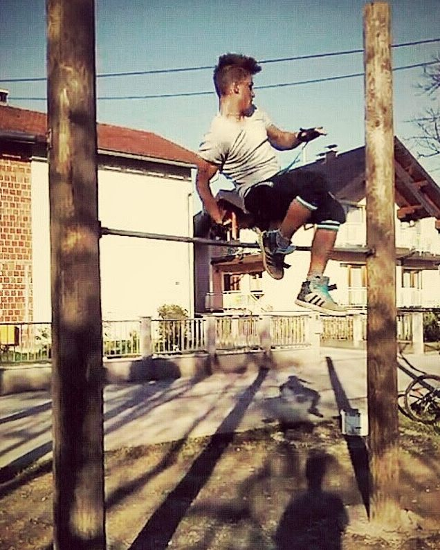
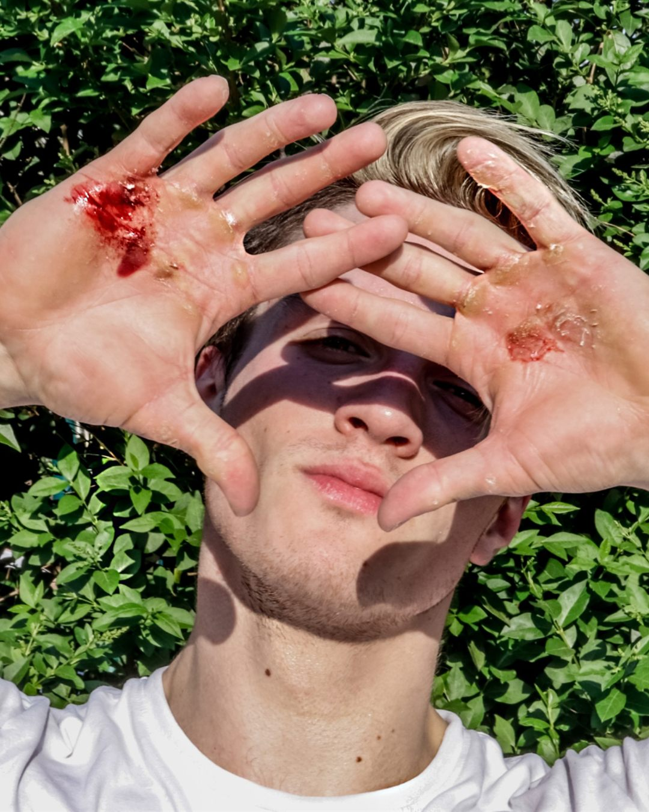
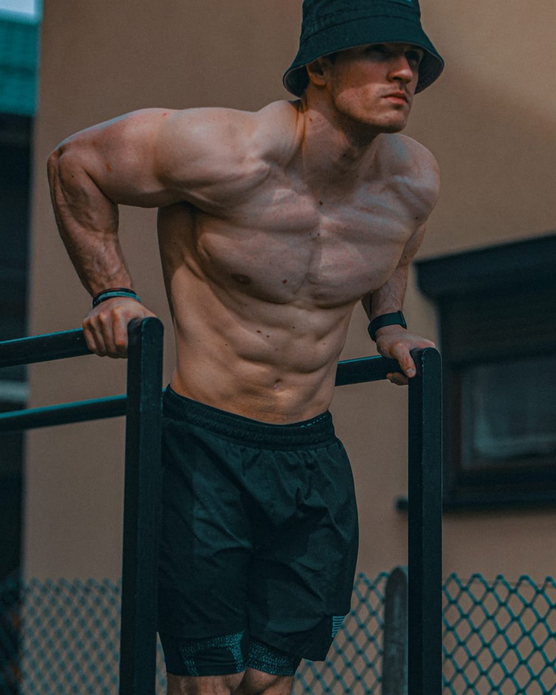
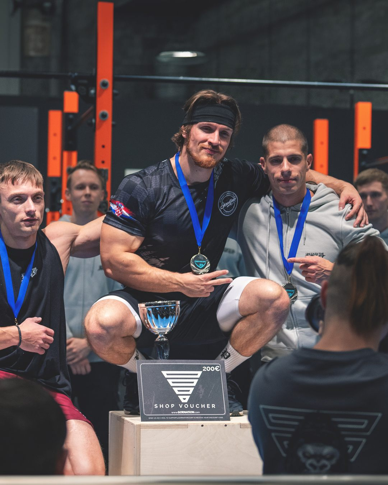
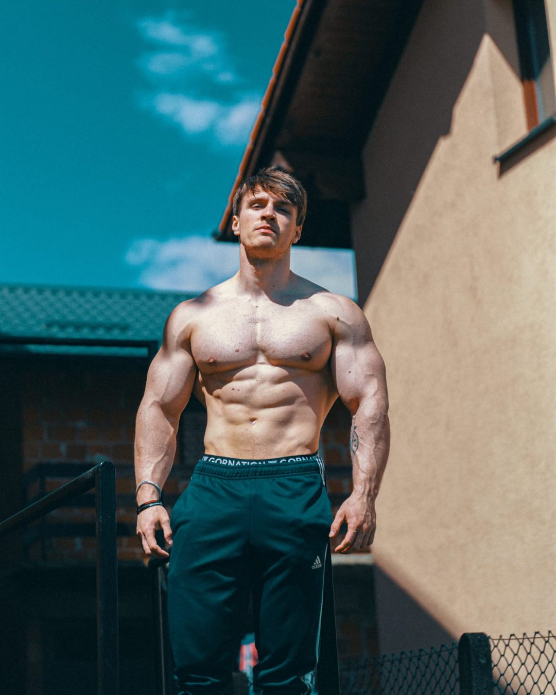

Zovem se Bruno Žgela i više od 15 godina posvetio sam usavršavanju treninga s vlastitom težinom, pokreta, snage i atletskog razvoja. Kroz natjecanja, coaching i tisuće sati treninga razvio sam sustav koji ljudima pomaže izgraditi snagu, samopouzdanje i tijelo na koje mogu biti ponosni.
Prati moj putOd trinaestogodišnjaka na street workout šipkama do međunarodnih postolja. Evo kako se to dogodilo.
Svoj calisthenics put započeo sam 2013., kao trinaestogodišnjak inspiriran slobodom street workouta i idejom da nevjerojatnu snagu možeš izgraditi samo vlastitim tijelom.
Budući da sam se prije bavio sportom, uključujući nogomet i hrvanje, razvio sam disciplinu, upornost i natjecateljski mentalitet koji me vode i danas.

Prvi dani na street workout šipkama.
Usput sam naučio da pravi napredak ne dolazi preko prečaca. Dolazi kroz dosljednost, pametno programiranje i strpljenje.
Kroz cijeli put vodio me jedan cilj: stalno pomicati granice onoga što ljudsko tijelo može postići treningom s vlastitom težinom. To su načela koja danas prenosim svakom klijentu.

Tisuće sati na šipci ostave traga.
Nakon više od deset godina predanog treninga specijalizirao sam se za endurance calisthenics: disciplinu koja spaja snagu, izdržljivost, mentalnu čvrstoću i sposobnost izvedbe pod ekstremnim umorom.

Neki od mojih najboljih osobnih rekorda.
Imao sam priliku natjecati se s nekima od najjačih sportaša na svijetu i predstavljati svoju zemlju na domaćoj i međunarodnoj sceni.
Osim medalja i plasmana, svako natjecanje dalo mi je dublje razumijevanje treninga, pripreme i izvedbe: znanje koje danas koristim kako bih pomogao svojim klijentima.

Na postolju nakon natjecanja.
Danas sve što sam naučio na svom sportskom putu koristim kako bih kroz personalizirani calisthenics coaching pomogao drugima da ostvare svoje ciljeve.
Moja misija je voditi ljude kroz proces u kojem postaju jači, samopouzdaniji i sposobniji, bez obzira na to odakle kreću. Želim ti dati znanje, strukturu i podršku koje bih i sam volio da sam imao kad sam tek počinjao.

I dalje treniram, a sada i vodim druge.
Za mene calisthenics predstavlja disciplinu, rast i stalnu težnju da budem bolji nego jučer. Tvoja priča može početi na isti način.
Pravi rezultati dolaze kroz dosljednost, pametno programiranje, pravilnu tehniku i spremnost da se svaki dan izazoveš.
Nauči pravilne obrasce pokreta prije nego što kreneš na napredne elemente.
Svaki program osmišljen je oko mjerljivog napretka.
Izgradi snagu i mobilnost koje traju desetljećima.
Svaka prekretnica na ovoj stranici počela je jednim jedinim ponavljanjem. Bilo da tek radiš prve korake ili juriš za sljedećim velikim ciljem, dat ću ti plan, strukturu i podršku da do njega stigneš.
Pogledaj planove